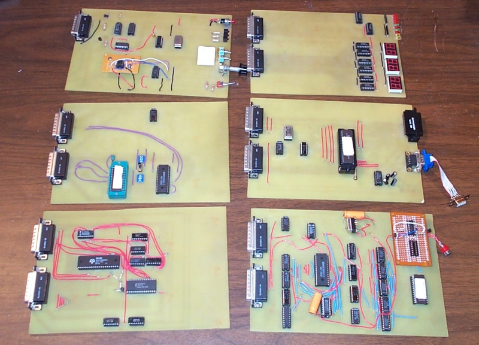
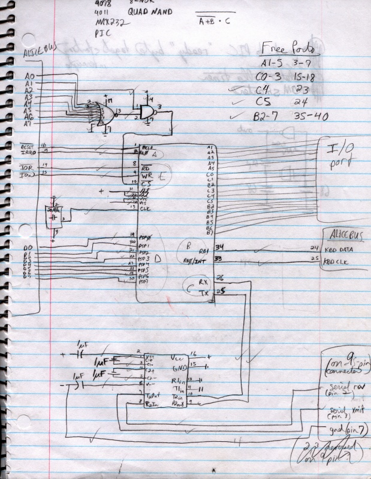
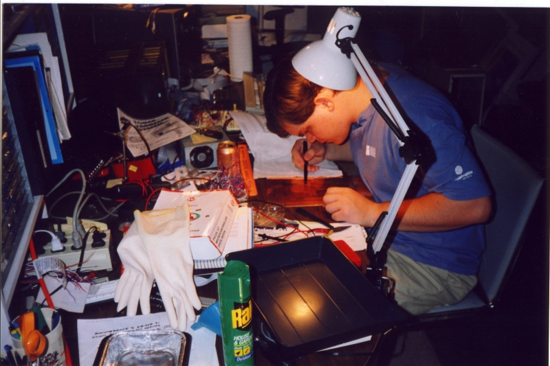
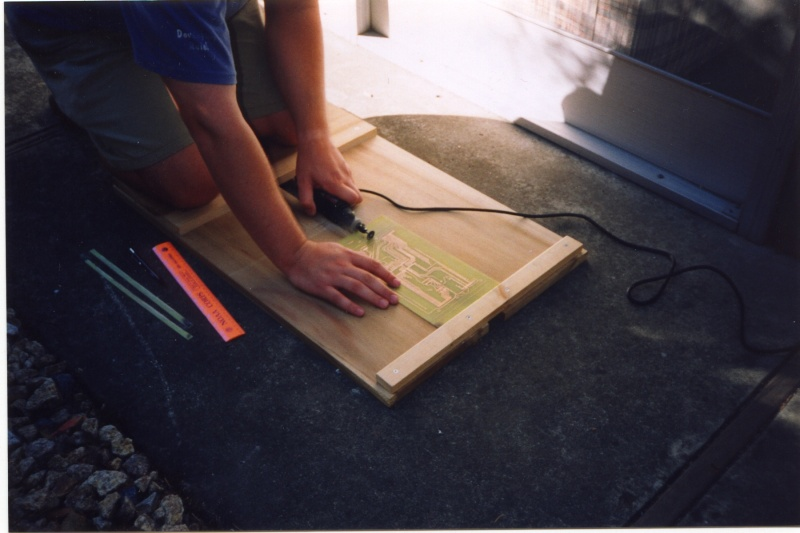
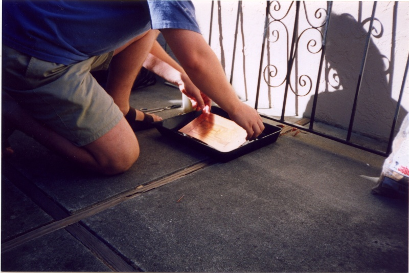
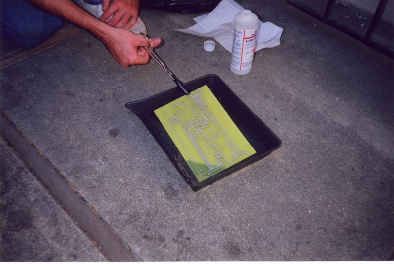
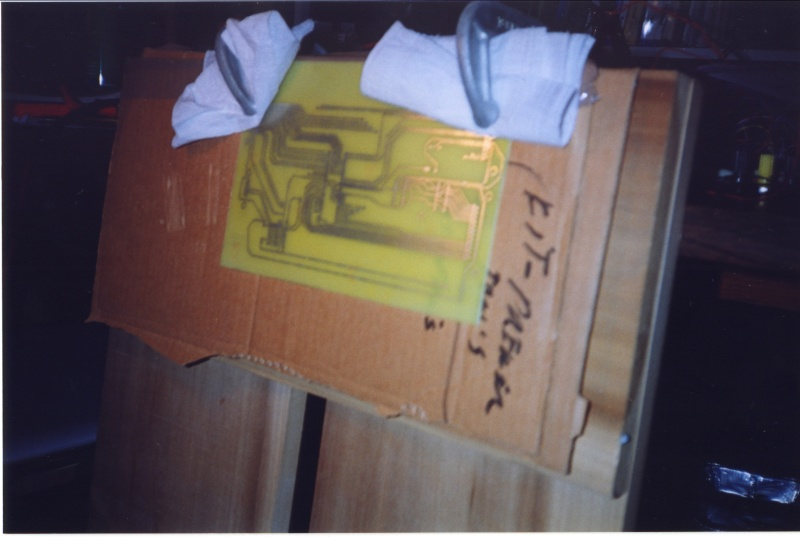
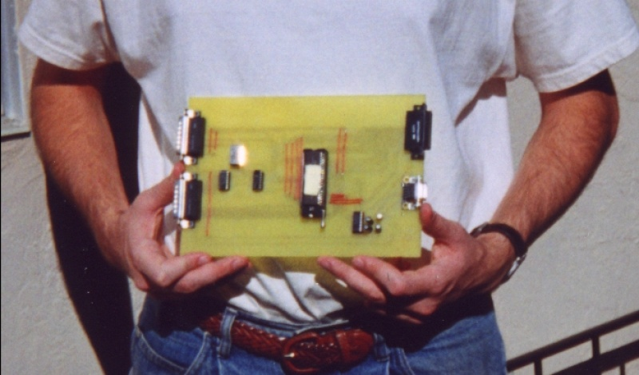

Printed Circuit Design and Construction
For the expansion cards in the Alice II, we decided to use printed circuits. Our original plan was to design, prototype, construct, and integrate each card with some sort of start-to-finish design philosophy. We ended up with a process that more or less matched our intentions, but with a little freedom built-in for how motivated we felt any given day. We designed each board on paper, built a prototype, created a online copy of the printed circuit and transferred it to copper, etched the copper and tinned the resulting traces, fixed-up, drilled, soldered, and finally tested it in the actual Alice II card cage.
The pictures in this page document the creation of the I/O board:


Our initial design phase usually consisted of dinner. Sometimes, over food or wine (our initial months spent on Alice were also spent educating ourselves about wine) we would discuss the features which a given board should have, and that would turn into a circuit on paper. Other times, one of us would sketch out a block diagram of the board and bring it to Brad's apartment (and later Brad's house) for the initial prototype implementation. A detailed initial paper design is very valuable, both for history and for later debugging. Several of our boards did not function correctly when built and we used the initial block diagram as a debugging tool, as described later.
This initial diagram ranged in detail from blocks representing integrated circuits connected by lines indicating signals to detailed circuit diagrams including transistors, resistors, gates, etc. We found it very useful to put down all the information we could gather, including pin numbers and signal abbreviations.
From the design on paper, we would usually create breadboarded prototypes. We built two DB-25 extension cables that connected the boardboard to the system bus.

One board we did not fully prototype was the CPU and interrupt board, and we absolutely regretted that. Our CPU prototype did not include the interrupt controller logic (we had no interrupting peripherals at that point), so we only tested that the CPU would run, then built the entire CPU board including the untested interrupt controller. We spent several months debugging the board, finally building another complete CPU board to fix bugs caused by our interpretation of the interrupt controller documentation. See our description of the CPU board for details about this unfortunate problem.
Once the breadboarded prototype worked to our satisfaction, we created an online master of the printed circuit. We used a program called tgif, which was the bane of our lives for the entire Alice project. We could wax prosaic about how bad tgif is. One example of a problem we had in tgif was that we preferred laying down circuit traces at integer multiples of 45 degrees, to make nice pretty boards. Until version 4, which was released after our last board was designed, tgif had no option to snap lines to 45 degrees. It seems like a very simple and also quite useful feature (most graphic design programs support it), but we spent a lot of time looking at the pixels in the lines on the screen trying to get as close to 45 degrees as possible. To be fair, tgif did the job better than any other program we had access to under Linux, including xfig, so we deeply appreciate its existence.

We transferred this image to a transparency for ironing onto copper. We never seemed to finalize our process for this. At one time, as is detailed in the project notebook, we printed directly onto laser printer transparencies. At another time, we printed onto paper with a laser printer and used a copier to transfer the image to the transparency. A transparency from a laser printer definitely will reproduce the original design more accurately, but it seems that the toner deposited by a copier was more suited to ironing.

Ironing was probably the most iffy part of the process. We sandwiched each transparency between a cleaned copper board (toner part against the copper!) and a piece of construction paper, so that the plastic transparency would not stick to the iron. Because we created the circuit master from the perspective of the parts side of the board (some would call that the "front"), we did not have to reverse the printout before ironing.
Each of us in turn would sit with an iron set to "cotton", slowly passing over the surface of the board. Ironing the transparency causes the toner to melt and adhere to the copper. We settled on a total ironing time of about fifteen minutes, since that seemed to maximize the amount of toner successfully transferred without making it smear too much.

Because the transfer was never perfect, we spent a certain amount of time afterwards fixing each trace with a circuit pen. The heat of the iron would often make the transparency warp, which damaged some traces, especially at the edges of the board.
The copper boards were each larger than the size of the card cage we used for Alice II. Each circuit was surrounded on the transparency by a rectangle indicating the final size for the circuit board. We built a contraption out of wooden planks which allowed us to drag the circuit board under a rotating blade on a Dremel tool. We cut these boards while wearing masks and safety goggles. We did not want to breathe fumes from burning fiberglass and we did not want fiberglass or copper shards to go into our eyes!
Finally, we submerged each board in copper etching solution to remove all the copper from the board except under the toner, which is not affected by the etchant. We didn't have a set time for bathing each board so we would occasionally pull it out and see if it was done. It usually took about ten minutes, but once, while etching, we forgot the board was submerged for about half an hour, and, when we removed it, the copper under the toner was etched away and all that was left was a wash of long strands of toner!
We subsequently cleaned away the toner with steel wool. The resulting board shined brightly, but, unless protected, the copper traces would usually oxidize after a few months and take on a dull finish.

We protected the copper from corrosion and made the board more receptive to soldering by plating tin on the copper traces. We tried a few different tinning products, but finally settled on a bottle of M.G. Chemicals “Liquid Tin” solution (catalog item 421) that took about ten minutes to tin a board, and the solution could then be poured back into its bottle for use another day.
Once tinned, we needed to check the connectivity of each trace to make sure electricity could actually get from the bus connector to each component. We would print out the master copy, check each path between components or to the bus, and mark the trace as checked on the printout. Often we would have to correct a trace with a conductive pen. Some of our worse boards show off many ugly corrected traces.
We drilled thousands of holes over the lifetime of this project, since components were placed on one side of the board and soldered on the other. Drilling while standing above the board rapidly proved too painful, so we set up a vertical drilling stand on which we C-clamped the board. Drilling was probably the most time-consuming part of board construction, and it was surprisingly hard for us to find drill bits that were the right size for component leads. We had to use a slightly-too-large bit more than once, and we usually regretted it because the holes would cut completely through a solder pad and we'd have to solder very carefully to make sure the lead had contact with the ends of the trace! Once the holes were drilled, we soldered each component to the board.
Making a printed circuit turned out to be a lot more work than we were expecting.
We usually ended up designing and prototyping the board over a few days. Designing the circuit master with tgif then took up to six hours sometimes spread over weeks. We usually reserved an entire Saturday afternoon and evening to iron, etch, tin, fix, and drill, and we sometimes had to continue the next day.
We certainly learned a lot about the process of manufacturing boards for hobby purposes. These techniques, however, would have to be substantially improved for production computer hardware. We have debated whether we would have been better served by wirewrapped boards. Our card cage has only a certain amount of clearance between cards, but even wirewrap leads probably would have fit. We never tried a wirewrap solution, and it would have helped if we had tried both printed circuits and wirewrapped prototyping before we started.
Editorial by Brad: When I originally built the Alice I, I tried to follow as detailed a design process as possible. It took me about two weeks, spending much of each night working with a graphic design tool or etching or drilling. I must have been really enjoying myself and not paying attention, because I didn't really understand how much time it took until we started the same process with many larger boards instead of the one small board.